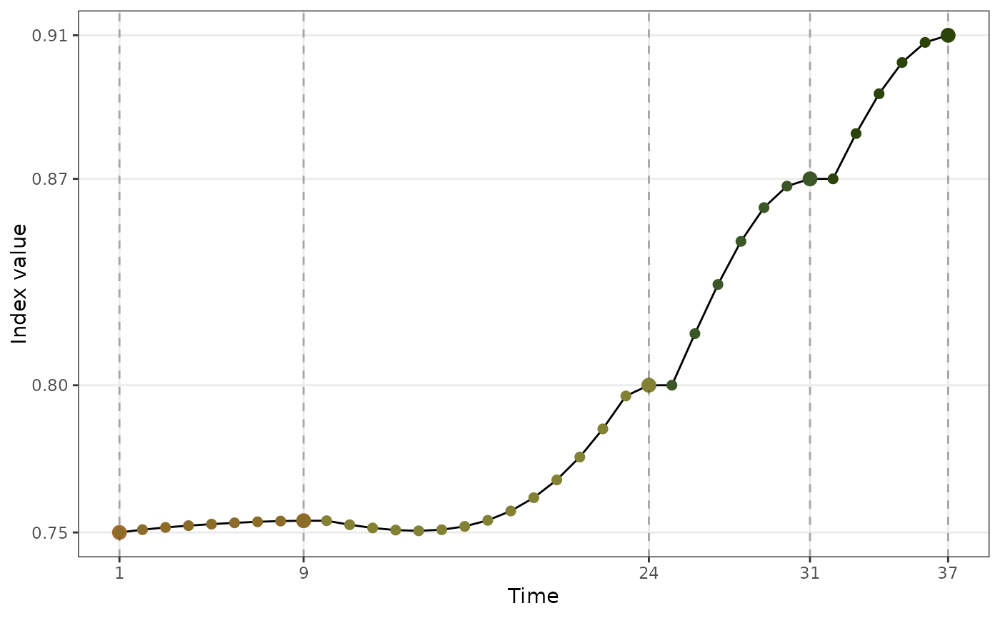

The boa data is simulated using different Gaussian mixtures with varied centres and weights (see section format for the simulation code).
Theses data are simulated for demonstrating the usage of four diagnostic plots in the package,
users can create their own guided tour data objects and diagnose with the visualisation designed in this package.
holes_1d_geo holes_1d_better holes_2d_better holes_2d_better_max_tries boa boa5 boa6
The code for simulating each data object is as follows:
set.seed(123456);
holes_1d_geo <-
animate_dist(boa5, tour_path = guided_tour(holes(), d = 1,
search_f = search_geodesic),
rescale = FALSE)
set.seed(123456)
holes_1d_better <-
animate_dist(boa5, tour_path = guided_tour(holes(), d = 1,
search_f = search_better),
rescale = FALSE)
set.seed(123456)
holes_2d_better <-
animate_xy(boa6, tour_path = guided_tour(holes(), d = 2,
search_f = search_better),
rescale = FALSE)
set.seed(123456)
holes_2d_better_max_tries <-
animate_xy(boa6, tour_path = guided_tour(holes(), d = 2,
search_f = search_better,
max.tries = 500),
rescale = FALSE)
library(tidyverse)
set.seed(1234)
x1 <- rnorm(1000, 0, 1)
x2 <- sample(c(rnorm(500, -3, 1), rnorm(500, 3, 1)), size = 1000)
x3 <- sample(c(rep(-1, 500), rep(1, 500)), size = 1000)
x4 <- sample(c(rnorm(250, -3, 1), rnorm(750, 3, 1)), size = 1000)
x5 <- sample(c(rnorm(330, -5, 1), rnorm(340, 0, 1), rnorm(330, 5, 1)), size = 1000)
x6 <- sample(c(rnorm(450, -5, 1), rnorm(100, 0, 1), rnorm(450, 5, 1)), size = 1000)
x7 <- sample(c(rnorm(500, -5, 1), rnorm(500, 5, 1)), size = 1000)
x8 <- rnorm(1000, 0, 1)
x9 <- rnorm(1000, 0, 1)
x10 <- rnorm(1000, 0, 1)
boa <- tibble(x1 = x1, x2 = x2, x3 = x3, x4 = x4, x5 = x5,
x6 = x6, x7 = x7, x8 = x8, x9 = x9, x10 = x10) <!-- %>% -->
boa <- as_tibble(scale(boa))
boa5 <- select(boa, x1, x2, x8: x10)
boa6 <- select(boa, x1, x2, x7: x10)
The prefix holes_* indicates the use of holes index in the guided tour. The suffix *_better/geo indicates the optimiser used: search_better and search_geodesic.
The name boa comes from the fact that the density plot of each variable in the data looks like boa constrictors swallowing multiple French baguettes, rather than elephants, as in the novella the little prince.
#> #>#> #> #>#> #> #>boa %>% pivot_longer(cols = x1:x10, names_to = "var", values_to = "value") %>% mutate(var = forcats::fct_relevel(as.factor(var), paste0("x", 1:10))) %>% ggplot(aes(x = value)) + geom_density() + facet_wrap(vars(var))